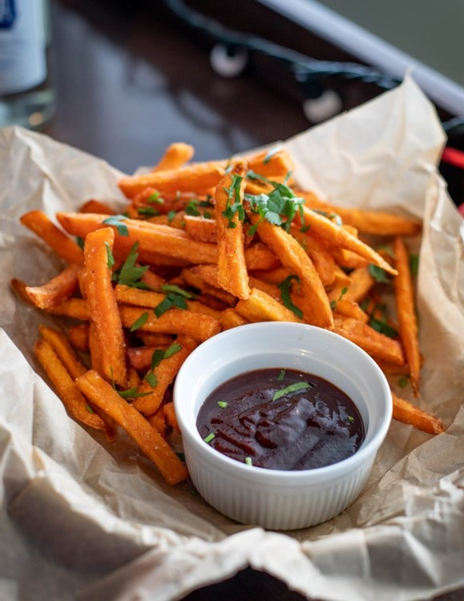
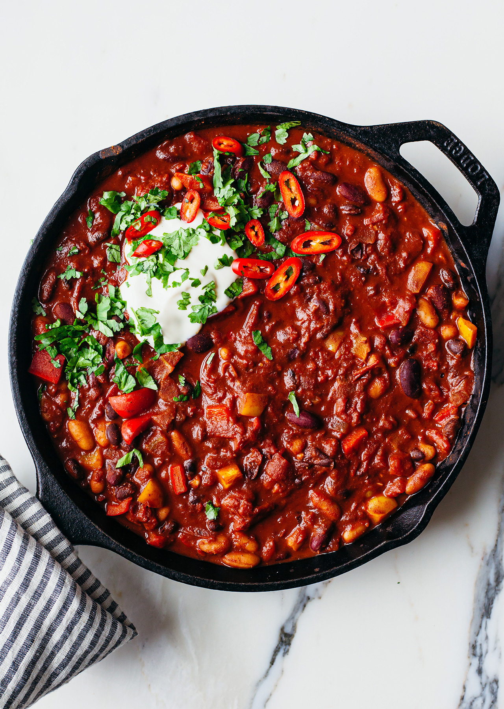
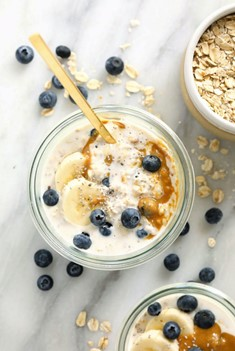
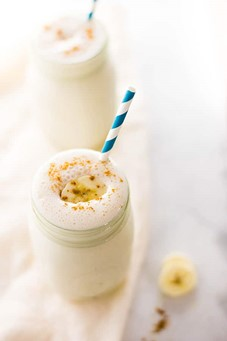
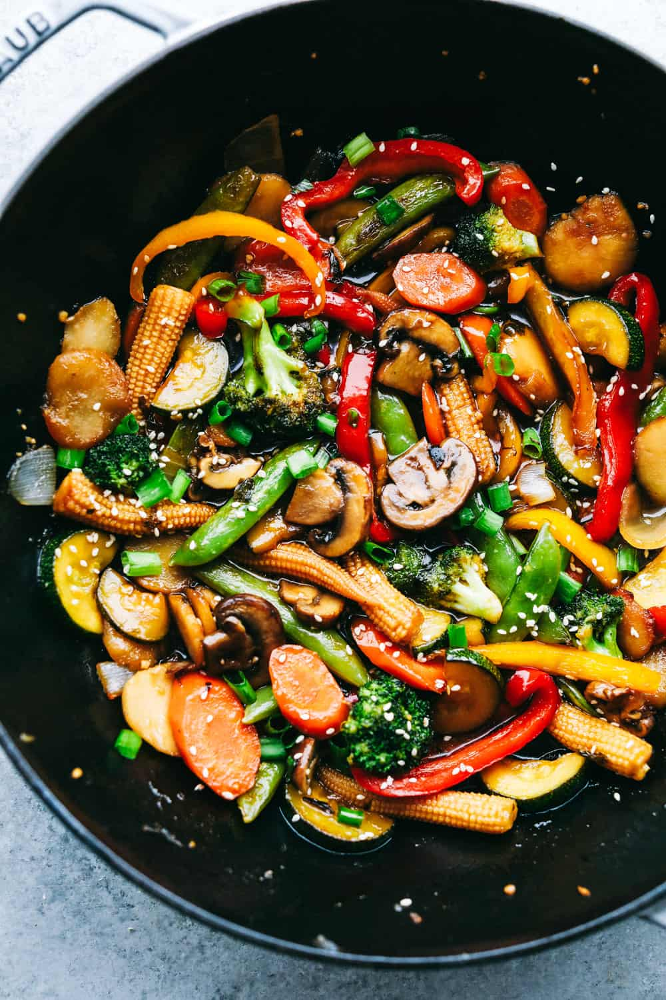

Add rest of ingredients to blender and blend until smooth.
Spray a non-stick pan with low calorie cooking spray and place over a medium heat.
Pour the mixture into the middle of the pan (makes about 6 small pancakes). Cook on one side for about 1 minute until golden brown then flip over and cook the other side.
Serve the pancakes with your favourite fresh fruit and toppings!
Mug cake
Ingredients
2 tbsp flour
1 tbsp sweetener (sucralose/ stevia)
2 tsp cocoa powder
¼ tsp baking powder
Pinch of salt
¼ tsp vanilla extract
1 tsp vegetable oil
2 tbsp skim milk (or plant alternative)
Nutrition
(Serves 1)
Per serving:
Calories: 190
Fat: 7.1g
Carbs: 24.1g
Protein: 6.2g
Instructions
Combine all dry ingredients in a mug or microwave proof dish and whisk until there are no lumps.
Add rest of ingredients and mix until smooth.
Bake in microwave for 30 seconds.
Cool for 3-5 minutes. The cake will continue to cook as it is cooling.
Sweet Potato Fries
Ingredients
1 large sweet potato (about 400g)
½ tsp salt
¼ tsp black pepper
¼ tsp baking powder
2 tsp olive oil
¼ teaspoon paprika
Nutrition
(Serves 2)
Per serving:
Calories: 212
Fat: 4.6g
Carbs: 40g
Protein: 3.1g
Instructions
Preheat oven to 200 degrees Celsius.
Slice up sweet potato into fries.
Add sliced sweet potato, oil, salt, pepper and paprika to a large bowl and toss until evenly coated.
Line a baking tray with parchment paper.
Spread out fries on tray and bake for 35 minutes.

Loaded Cauliflower
Ingredients
500g cauliflower
100g sour cream
2 rashers
3 tbsp butter
¼ teaspoon garlic powder
80g cheddar cheese
2 tbsp chives
Nutrition
(Serves 4)
Per serving:
Calories: 289
Fat: 24.1g
Carbs: 7.1g
Protein: 11.4g
Instructions
Fry rashers on high heat until crispy. Roughly chop and set aside.
Chop cauliflower and add to a microwave safe bowl with 2 tbsp water.
Cover with cling film and microwave for 5-8 minutes until cooked through.
Drain excess water and let cool for a few minutes.
Add cauliflower to a food processor and blend until fluffy.
Add butter, sour cream and garlic powder and blend until smooth.
Add cauliflower mixture to bowl and combine with the chives and half of the cheese and season with salt and pepper.
Top the loaded cauliflower with the remaining cheese and the rashers and microwave for a couple minutes until the cheese is melted.
Vegan Chilli
Ingredients
3 tbsp olive oil
2 sweet potatoes
2 tsp smokes paprika
2 tsp ground cumin
1 onion
2 carrots
2 garlic cloves
2 celery sticks
1 tsp dried oregano
2 tsp chilli powder
1 tbsp tomato puree
1 red pepper
400g black beans
400g kidney beans
800g chopped tomatoes
Nutrition
(Serves 4)
Per serving:
Calories: 367
Fat: 10g
Carbs: 48g
Protein: 12g
Instructions
Preheat the oven 200 degrees Celsius.
Peel and cut sweet potato into medium-sized chunks, evenly coat with 1 ½ tbsp oil, 1 tsp smoked paprika and 1 tsp ground cumin.
Season with salt and pepper and roast for 25 minutes.
Meanwhile, chop the onion, carrots and celery and cook for 8-10 minutes with the remaining oil in a large saucepan over a medium heat. After, crush the garlic and add to the saucepan, cook for a further minute.
Mix in the remaining dry spices and tomato puree into the vegetables and cook for one more minute.
Add in the red pepper, chopped into small pieces, along with the chopped tomatoes and 200ml water. Bring to the boil then allow simmer for 20 minutes.
Add the beans and cook for another 10 minutes.
Add in the roasted sweet potato and serve with guacamole, rice, coriander and lime.

Courgette lasagne
Ingredients
500g lean minced beef
2 celery sticks
2 onions
3 garlic cloves
150ml red wine
400g chopped tomatoes
2 large carrots
400ml beef stock
550 ml low fat milk
3 tbsp cornflour
2 tsp Dijon mustard
2 large courgettes
4 vine tomatoes
20g parmesan
40g vintage cheddar
1 tsp black peppercorns
¼ tsp nutmeg
Nutrition
(Serves 6)
Per serving:
Calories: 336
Fat: 8.7g
Carbs: 28g
Protein: 20.3g
Instructions
Preheat the oven 180 degrees Celsius.
Fry mince over medium heat for 5 minutes, until golden brown. Finely chop the onions and celery.
Fry half the onions and the celery over a medium heat for 5-6 minutes and season well. Crush the garlic, add to the onions and celery and fry for a further minute. Grate the carrots and add in, along with the red wine. Simmer for 3-4 minutes.
Add the tinned tomatoes, stock and bring to the boil. Cover with lid and turn down heat and let simmer for 45 minutes, stirring occasionally. Remove lid and simmer for a further 15 minutes or until sauce has thickened.
Meanwhile, put remaining onions in a separate pan along with the peppercorns and milk (reserving 3 tbsp) and cook over a low heat. Simmer for 2-3 minutes. Remove from heat and let cool for 10 minutes.
After cooled, drain with a sieve.
Put cornflour and reserved milk in a small bowl and whisk until a thick paste is formed. Then add to the strained milk and simmer over low heat for 5 minutes. Add the mustard and ground nutmeg and season with salt and pepper
Cut courgette into thin slices lengthways. Blanch in hot water for 1 minute.
Spread half the mince mixture out in a lasagne dish. Layer half the courgette slices on top.
Repeat step 9.
Pour white sauce over top. Slice tomatoes and place on top of white sauce. Grate the cheddar and parmesan cheese and sprinkle on top.
Bake for 30 minutes.
Cut into six slices and serve with a side salad.
Chia pudding
Ingredients
3 tbsp chia seeds
1 tbsp sweetener of choice
230 ml almond milk
¼ teaspoon vanilla essence
Nutrition
(Serves 1)
Per serving:
Calories: 241
Fat: 14.1g
Carbs: 21.3g
Protein: 8.4g
Instructions
Combine all ingredients in a mason jar or small bowl.
Fry mince over medium heat for 5 minutes, until golden brown. Finely chop the onions and celery.
Let mixture sit for 5 minutes, then stir again to break up any large clumps of chia seeds.
Cover mixture and refrigerate for 1-2 hours or leave overnight.
Serve with your favourite toppings such as fresh fruit and granola.
Overnight oats
Ingredients
1 tbsp chia seeds
1 tbsp maple syrup
230 ml almond milk
1 teaspoon vanilla essence
80g oats
140g non-fat Greek yoghurt
Nutrition
(Serves 2)
Per serving:
Calories: 270
Fat: 6g
Carbs: 44g
Protein: 12g
Instructions
Combine all ingredients in a large class container.
Cover mixture and refrigerate for at least 2 hours or leave overnight.
Serve with your favourite toppings such as fresh fruit and granola.

Keto “Oats”
Ingredients
2 tbsp chia seeds
2 tbsp ground flaxseed
2 tbsp shredded coconut
2 tbsp sweetener of choice
120 ml unsweetened coconut milk
Nutrition
(Serves 1)
Per serving:
Calories: 250
Fat: 17g
Carbs: 16g
Protein: 18g
Instructions
Mix all dry ingredients together in a small mixing bowl.
Combine all ingredients in a mixing bowl.
Transfer to small, ovenproof dish.
Then add in the coconut milk to make it creamy “oatmeal” texture.
Serve with your favourite toppings and enjoy!
Baked Oats
Ingredients
1 tsp sweetener of choice
1 small egg
40g oats
100g non-fat Greek yoghurt
100g raspberries
Nutrition
(Serves 1)
Per serving:
Calories: 294
Fat: 7.3g
Carbs: 32g
Protein: 20.9
Instructions
Preheat oven to 180 degrees Celsius.
Combine all ingredients in a mixing bowl.
Transfer to small, ovenproof dish.
Bake for about 35 minutes until golden brown.
Serve with your favourite toppings.
Protein Mug Brownie
Ingredients
1 scoop chocolate protein powder
1 large egg
1 tbsp coconut flour
2 tbsp sweetener of choice
½ teaspoon baking powder
1.5 tbsp cocoa powder
¼ cup skim milk
1 tbsp chocolate chips
Nutrition
(Serves 2)
Per serving:
Calories: 190
Fat: 5.9g
Carbs: 14.9g
Protein: 18.4g
Instructions
Combine all dry ingredients in a mixing bowl.
Fry mince over medium heat for 5 minutes, until golden brown. Finely chop the onions and celery.
In a separate bowl, whisk together the egg and the milk.
Add to the dry mixture and mix until a smooth batter is formed.
Stir in the chocolate chips.
Microwave for 30 seconds.
Enjoy!
Keto Brownie
Ingredients
170g butter
85g keto chocolate chips
60g almond flour
25g cocoa powder
3 large eggs
150g granulated sweetener of choice
½ teaspoon baking powder
Nutrition
(Serves 12)
Per serving:
Calories: 180
Fat: 17g
Carbs: 5g
Protein: 3g
Instructions
Preheat oven to 180 degrees Celsius.
Line 8x8 inch pan with greaseproof paper.
Combine all dry ingredients together in a large mixing bowl.
Melt butter and half the chocolate over a medium heat until fully melted.
In a separate bowl, whisk the eggs until frothy.
Gradually add in the chocolate mixture to the eggs, continuously stirring until fully combined.
Mix in the dry ingredients a little at a time. Fold the remaining chocolate chips into the brownie batter.
Transfer into the pan.
Bake for about 15 minutes until cooked through.
Allow to cool for 20 minutes before cutting into 12 brownies.
Banana Protein Shake
Ingredients
1 frozen banana
¼ teaspoon ground cinnamon
250 ml almond milk
1 scoop vanilla protein powder
140g non-fat Greek yoghurt
Ice, as needed
Nutrition
(Serves 1)
Per serving:
Calories: 362
Fat: 10.7g
Carbs: 32.6g
Protein: 38.2g
Instructions
Add all ingredients to blender and blend until smooth.
If shake is too thick add more almond milk until the desired consistency is reached.
To make shake thicker add more ice to the blender.
Serve in a large glass or mason jar.

Keto Carrot Cake Bars
Ingredients
1 tbsp ground cinnamon
1 teaspoon vanilla extract
125 ml milk of choice
1 tsp salt
50g granulated sweetener of choice
120g almond butter
60ml sugar free syrup
2 tbsp grated carrots
60 ml pumpkin puree
110g coconut flour
For icing:
250g cream cheese
1 tsp cinnamon
2 tbsp granulated sweetener of choice
Nutrition
(Serves 9)
Per serving:
Calories: 235
Fat: 12g
Carbs: 12g
Protein: 10g
Instructions
Line an 8x8 inch baking pan with greaseproof paper.
Combine the flour, protein powder, salt, sweetener and cinnamon in a large mixing bowl.
Mix in the grated carrots and pumpkin puree.
Melt almond butter and syrup over a medium heat until melted. Whisk in the vanilla extract.
Pour into dry ingredients, along with the milk and mix until fully combined.
Transfer into baking pan and spread out evenly.
Refrigerate for 10 minutes.
Combine all ingredients for icing in a mixing bowl and mix until smooth.
Take bars out of fridge and spread icing over the top.
Place bake in the fridge for at least 30 minutes.
Once set cut into 9, evenly sized pieces.
Southwestern rice
Ingredients
1 tbsp olive oil
1 medium green pepper
½ teaspoon cumin
1 teaspoon chilli powder
1/8 teaspoon turmeric
1 medium onion
2 garlic cloves
200g uncooked long grain rice
280g sweet corn
1 can black beans, rinsed and drained
1 can chopped tomatoes
400 ml vegetable stock
Nutrition
(Serves 8)
Per serving:
Calories: 198
Fat: 3g
Carbs: 37g
Protein: 7g
Instructions
Chop the onion and pepper and crush the garlic. Fry onion and pepper and oil in a large skillet over a medium heat for 3 minutes. Add in garlic and fry for a further minute.
Stir in rice, spices and vegetable stock and bring to a boil
Turn down heat, cover and let simmer for about 15 minutes until rice is cooked through.
Add in all remaining ingredients and cook on a low heat until everything is fully heated.
Vegan Stir Fry
Ingredients
350g marinated seitan pieces
1 tbsp cornflour
1 red pepper
300g pak choi
2 spring onions
2 tbsp vegetable oil
Rice or noodles, to serve
200g black beans, rinsed and drained
For sauce:
2 tbsp soy sauce
1 tsp Chinese five-spice
2 tbsp rice vinegar
1 tbsp smooth peanut butter
1 red chopped chilli
200g black beans, rinsed and drained
3 garlic cloves
175g dark brown sugar
Nutrition
(Serves 4)
Per serving:
Calories: 326
Fat: 8g
Carbs: 37g
Protein: 22g
Instructions
Put all ingredients needed for the sauce, along with 50ml water into a food processor, season well with salt and pepper and blend until a smooth sauce.
Heat sauce in a saucepan over a low heat for 5 minutes until thick.
Toss seitan pieces with the cornflour in a large bowl.
Heat a wok over a high heat with a little oil and stir-fry the seitan for 5 minutes until golden brown. Set seitan aside.
Chop red pepper, pak choi and spring onions and stir fry in the wok along with the beans for 3-4 minutes.
Add back in the seitan as well as the sauce and bring to a boil for about a minute.
Serve with a side of noodles or rice.

Szechuan Chicken
Ingredients
225g chicken breast
1 tbsp vegetable oil
50g chopped onion
½ tsp sugar
½ tsp ground Szechuan pepper
20g corn starch
2 ½ tbsp soy sauce
1 crushed garlic clove
1 tbsp balsamic vinegar
Nutrition
(Serves 2)
Per serving:
Calories: 224
Fat: 7g
Carbs: 14g
Protein: 25g
Instructions
Dice chicken into pieces and toss in large bowl with the corn-starch.
Heat oil in a pan over a medium heat. Add in garlic and chicken and cook until lightly browned
Add soy sauce, sugar and vinegar as well as 2 tbsp of water. Cover and cook for 2 minutes.
Add in the pepper and onions and cook for a further 2 minutes.
Serve immediately.
Smoothie Bowl
Ingredients
80 g frozen strawberries
80 g frozen raspberries
50 ml orange juice
1 scoop vanilla protein powder
75 ml oat milk
Ice, as needed
Nutrition
(Serves 1)
Per serving:
Calories: 240
Fat: 4.6g
Carbs: 20.5g
Protein: 25.5g
Instructions
Add all ingredients to blender and blend until smooth.
If smoothie is too thick add more oat milk until the desired consistency is reached.
To make smoothie thicker add more ice to the blender.
Serve in a bowl along with toppings such as fresh fruit and granola.
Keto Fishcakes
Ingredients
450g cod
35g coconut flour
2 tbsp olive oil
2 eggs
Handful parsley, chopped
1 red onion, finely chopped
1 tsp paprika
½ tsp cayenne pepper
½ tsp salt
½ tsp black pepper
Nutrition
(Serves 6)
Per serving:
Calories: 153
Fat: 7g
Carbs: 5g
Protein: 16g
Instructions
Season cod with salt and pepper.
Fry fish with a little oil, over a medium heat for 10 minutes.
After cooked, use a fork to break cod up into small pieces.
Add in the parsley, onions, flour and eggs along with the spices.
Coarsely blend mixture in a food processor.
Compress mixture into fishcakes.
With the remaining oil, fry fish cakes over a medium heat for about 3 minutes on each side.
Serve with a side salad.
Tortilla Pizza
Ingredients
2 tbsp passata
½ tbsp olive oil
½ tsp dried mixed herbs
50g grated mozzarella
8 slices pepperoni
8 slices jalapeño
2 plain tortillas
1 crushed garlic clove
Nutrition
(Serves 2)
Per serving:
Calories: 226
Fat: 14g
Carbs: 23g
Protein: 11g
Instructions
Heat oven to 200 degrees Celsius.
Combine olive oil, herbs, garlic and passata in a small bowl and season well.
Put tortillas on a lined baking tray.
Spread tomato sauce over the bases and sprinkle over the mozzarella.
Add the jalapeños and pepperoni.
Bake in the oven for 6-8 minutes or until tortilla edges are golden brown and the cheese is melted.